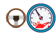
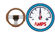
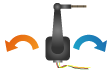
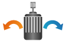
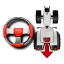
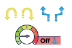
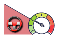
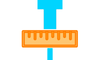
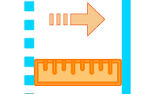
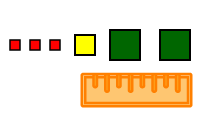

Objetivo
—°
Cero del WAS · ángulo calculado: 0.00°
Sensor que corta el autosteer al agarrar el volante. Uno solo a la vez.

Presión
Corriente
Invertir sensor de ángulo (WAS)
Invertir motorBotón: presiona ON, presiona OFF. · Interruptor: presionado ON, soltado OFF.
 Modo firme / suave
Modo firme / suave
Dirigir en retroceso



